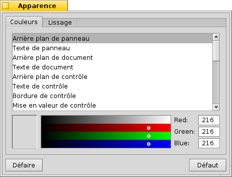
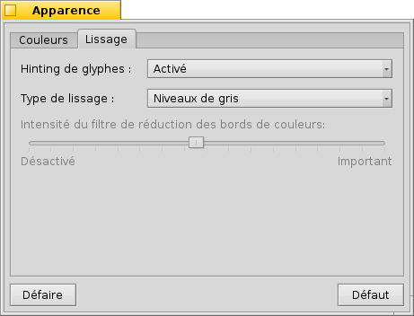

Français
Français Deutsch
Deutsch Italiano
Italiano Русский
Русский Español
Español Svenska
Svenska 日本語
日本語 Українська
Українська 中文 ［中文］
中文 ［中文］ Português
Português English
English Appearance (Apparence)
Appearance (Apparence)
| Deskbar : | ||
| Localisation : | /boot/system/preferences/Appearance | |
| Réglages : | ~/config/settings/system/app_server/appearance |
Les préférences d'Apparence vous permettent de changer certaines caractéristiques visuelles de Haiku.
 Couleurs
Couleurs

Dans le premier onglet, , vous pouvez régler les couleurs de différentes parties de l'interface utilisateur. La palette de couleurs accepte les glisser-déposer de couleurs depuis d'autres programmes, ce qui vous permettra de glisser des couleurs depuis par exemple WonderBrush, Icon-O-Matic, ou les préférences Backgrounds.
Lissage

Le deuxième onglet, , permet de régler la manière dont les éléments graphiques sont rendus à l'écran.
Hinting de glyphes
Si activé, la (Glyph hinting) aligne les lettres de manière à ce que leurs bords horizontaux soient situés entre deux pixels. Ceci permet un meilleur contraste, en particulier pour le texte en noir sur blanc. Ce dernier apparaît plus net. Le réglage "" est particulièrement utile pour les écrans à base résolution comme ceux des netbooks. Sur ceux-ci la consigne peut donner un mauvais résultats avec des polices de petite taille, mais avec ce réglage vous pourrez conserver les avantages de la consigne dans les éditeurs de texte et le Terminal.
Voyez les différences induites par le hinting entre ces deux captures d'écrans agrandies :
 Hinting désactivé |  Hinting activé |
Notez que ces captures d'écran de l'application Magnify sont bien sûr réalisées avec des réglages de hinting différents. Vous pouvez donc voir l'effet du réglage sur le texte de l'onglet jaune et celui de la fenêtre ("35 x 15 @ 8 pixels/pixel").
Type de lissage
Une autre technique d'amélioration de rendu est le lissage, qui concerne aussi bien les graphismes vectoriels que le texte. Il adoucit les lignes en changeant la couleur de certains pixels. Il y a deux méthodes:
change la luminosité des pixels des bords.
donnera un meilleur rendu sur les écrans LCD haute résolution. Au lieu de changer l'intensité du pixel, il change sa couleur, ce qui permet de déplacer le bord d'un élément d'une fraction de pixel (car sur les écrans LCD les composantes rouge, vert et bleu sont séparées).
À nouveau, voici les deux méthodes présentées sur deux captures d'écran :
Niveaux de gris, hinting désactivé | LCD subpixel, lissage activé |
Le lissage sous-pixel ajoute une bordure colorées aux objets, que vous pourriez ne pas apprécier. Dans Haiku, vous pouvez mélanger les deux méthodes de lissage et trouver le bon réglage pour vous en déplaçant un curseur.
Si vous activez le hinting et le lissage sous-pixel en modifiant les sources de Haiku et en recompilant l'ensemble, voici ce que vous obtiendrez par rapport au hinting avec niveaux de gris :
Niveaux de gris, hinting activé | LCD sous-pixel, hinting activé |
En bas du panneau, vous trouverez deux boutons :
| réinitialise toutes les valeurs par défaut. | ||
| rétablit les réglages qui étaient actifs quand vous avez lancé les préférences d'Apparence. |